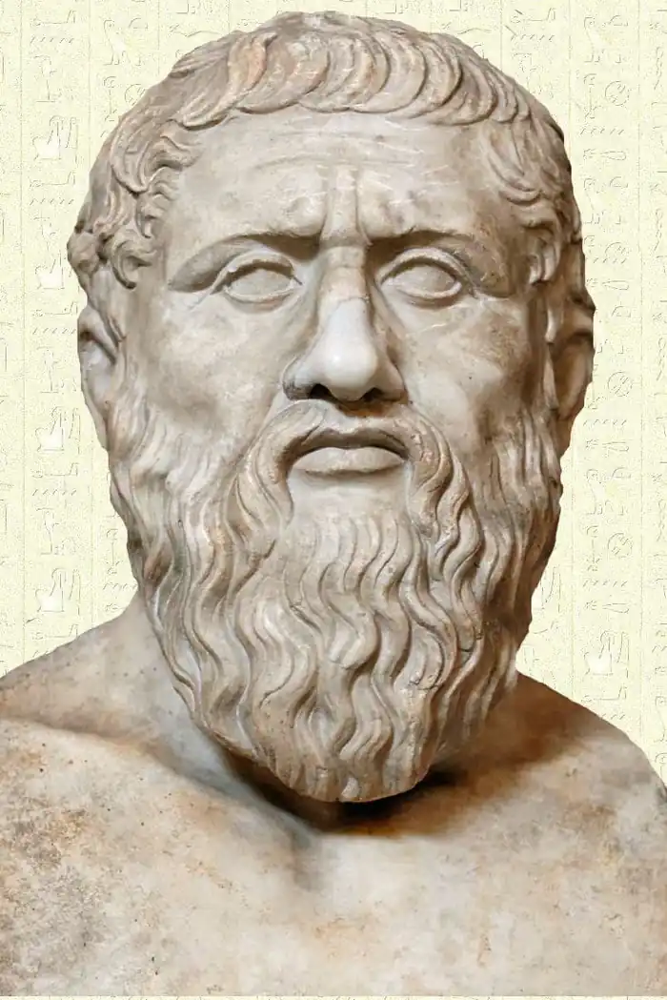

Платон — давньогрецький мислитель, засновник філософської школи відомої як Академія Платона. Один з основоположників європейської філософії нарівні з Піфагором, Парменідом і Сократом.
Платон народився в Афінах в 428-427 рр. до н. е. Його справжнє ім'я — Аристокл. Саме слово Платон означає "широкоплечий", цей псевдонім йому в юнацтві дав учитель боротьби Аристон з Аргоса за його міцну будову тіла. Він був сином Аристона, нащадка царя Кодра, і Периктіони, предком якої був великий законодавець Солон. Грамоті він навчався в Діонісія, про якого згадує в своєму творі "Суперники". Відомо також, що він навчався боротьбі, живопису, а крім того складав дифірамби, пісні й трагедії. Пізніше схильність до поезії виявилась в художньо обробленій формі його діалогів. Оскільки він був обдарований розумово й фізично, то отримав чудову освіту, наслідком якої було його близьке знайомство з філософськими теоріями того часу. Аристотель повідомляє, що Платон спочатку був учнем Кратила, послідовника Геракліта.
В 20 років Платон зустрів Сократа й залишався з ним до самої смерті свого вчителя — всього 8 років. Згідно з аттичною легендою, у ніч перед зустріччю з Платоном Сократ бачив уві сні лебедя в себе на грудях, який високо злетів із дзвінким співом, і після знайомства з Платоном Сократ неначе вигукнув: "Ось мій лебідь!". Цікаво, що в міфології античності лебідь — птах Аполлона, а сучасники порівнювали Платона з Аполлоном як богом гармонії. Як згадує сам Платон у Сьомому листі, ще молодим він готувався до активної участі в політичному житті свого міста. Несправедливий осуд Сократа викликав у Платона розчарування в політиці Афін і став поворотним моментом в його житті. В 28 років, після смерті Сократа, Платон разом з іншими учнями великого філософа залишив Афіни й переїхав в Мегари, де жив один з відомих учнів Сократа — Евклід. У 40 років він відвідав Італію, де познайомився з піфагорейцем Архітом. Раніше він побував в Єгипті й у Кірені, але ці мандрівки він замовчує в своїй автобіографії. Він знайомиться з Діонісієм Старшим, тираном Сиракуз, і мріє втілити в життя свій ідеал правителя-філософа. Однак з ним дуже швидко виникли неприязні стосунки, хоча зав'язалась дружба з Діоном, племінником тирана. В Діоні Платон сподівався знайти гідного учня і в майбутньому — філософа на троні. Платон образив правителя своїми міркуваннями про тиранічну владу, сказав, що не все те добре, що корисно лише тирану, якщо той не відрізняється доброчесністю. За це Платона було продано в рабство на Егіну, з якого його викупив і звільнив Аннікерид, філософ мегарської школи. Пізніше Платон хотів повернути ці гроші Аннікериду, а коли той відмовився їх взяти, купив на них сад у передмісті Афін, названий на честь місцевого героя Академа Академією. В цьому саду Платон у 387 р. до н. е. заснував свою школу, відому платонівську Академію, яка існувала в Афінах аж до 529 року, доки не була закрита імператором Юстиніаном. Ще двічі він їздив у Сиракузи на вимогу Діона, сподіваючись здійснити свою мрію про ідеальну державу на землях, які йому обіцяв виділити Діонісій Молодший. І хоча ці спроби ледве не коштували Платону життя, наполегливість його є прикладом високого служіння ідеалу. У 360 році Платон повернувся до Афін і не розлучався з Академією до своєї смерті в 347 р. до н. е.